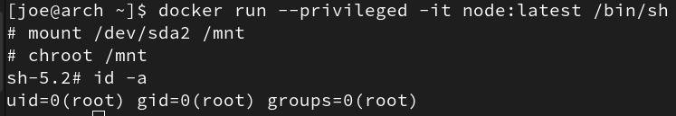
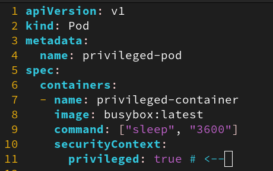
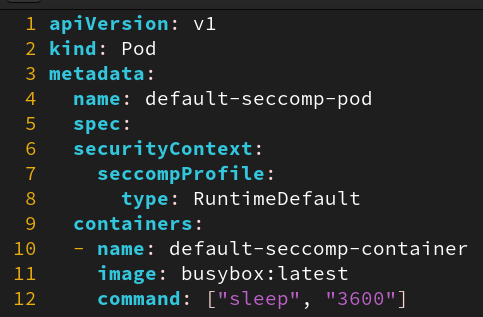
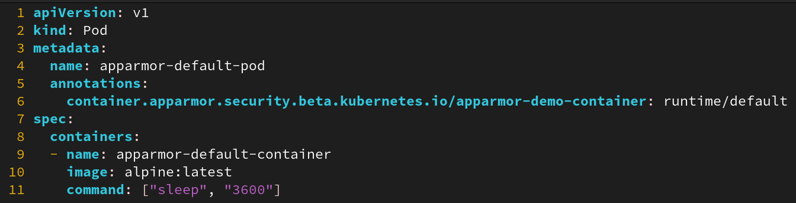
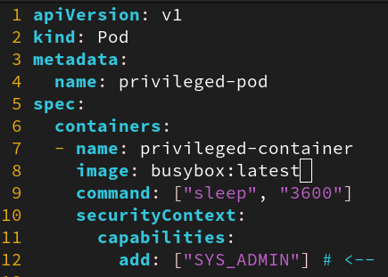
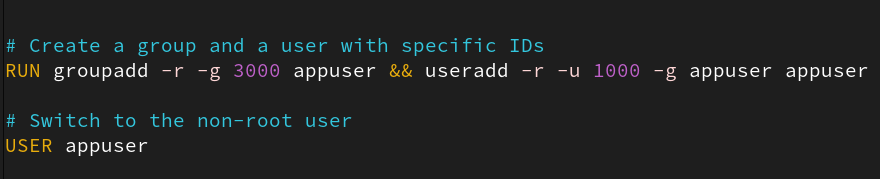
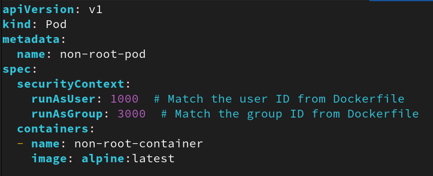

Guide to Pragmatic Container Security
Episode 1: Runtime Security
Intro
If reinforced windows are our 'application security', and burglar alarms are our 'container monitoring', then runtime security would be never having bought anything worth stealing.
This is part #1 of the Guide to Pragmatic Container Security - today focussing on Runtime Security. In this post we’ll review the most common threats our container workloads face, and propose the 8 most-impacting controls you can implement to reduce the risk associated with compromised container workloads.
What Attackers Target
Our first step is understanding the types of attacks seen in the wild mounted from compromised container workloads:
- Resource hijacking: Google’s threat horizon report states that 86% of their compromised cloud instances were used to run attacker-controlled cryptominer software.
- Lateral movement: upon compromising a container, attackers will attempt privilege escalation via container breakouts, or laterally moving to higher-privilege containers.
- Data exfiltration: due to the amount of sensitive data often passing through publicly-exposed container workloads, attacks often revolve around harvesting sensitive data available to the container process.
With this in mind, we can now outline our threat-informed controls to mitigate these attacks.
The tl;dr, or 'Hurry it the Fuck Up Joe'
For those pretending to be in a rush, here’s the quick list of recommendations to maximise runtime security impact:
- #1: Don’t run privileged containers
- #2: Use default SecComp security profiles
- #3: Use default AppArmor security profiles
- #4: Don’t add unnecessary capabilities
- #5: Don’t run containers as
root - #6: Don’t mount
/var/run/docker.sock - #7: Don’t mount unnecessary host directories
- #8: Use Docker Content Trust when pulling images
And with that facade of helpfulness out of the way, let’s take a gentle dip into impact-based container runtime security.
The l;r, or 'You are a Valued Engineer, Joe'
Control #1: Don’t run privileged containers:
Overview: Privileged containers run with full uninhibited access to their host machines - allowing for effortless container breakout.
Risk mitigated:
Preventing privileged containers from being deployed hugely reduces the likelihood of a successful container breakout, as if a privileged container is compromised it’s game over
- e.g. from a compromised privileged container an attacker can breakout to the host machine with just: 
How to implement:
- Audit files and commands used to run containers for usage of
privileged or the
--privilegedflag
- Check Kubernetes manifest files for
securityContextsetting privileged

- Audit files and commands used to run containers for usage of
privileged or the
How to mature:
To mature this control, you can implement policies to block running privileged containers:
- This can be done via Open
Policy Agent policies which can be created to prevent
docker runandcompose.yamlfrom creating privileged containers - For Kubernetes clusters we can implement Kubernetes Admission Controllers which can be configured to block admission of privileged containers into a cluster
- This can be done via Open
Policy Agent policies which can be created to prevent
Control #2: Use default SecComp security profile
Overview: This is a Linux security module used to set limits on the syscalls available to a container, restricting a processes ability to interact with the kernel
Risk mitigated:
- Many container breakout attacks rely on interacting with the kernel to perform specific actions (e.g. mounting the root filesystem, loading kernel modules, tracing a process)
- Using SecComp profiles restricts the potential attack
vectors an attacker can exploit - they can’t mount the host
filesystem if they don’t have access to the
mountsyscall!
How to implement:
- SecComp will run in default mode (using
DefaultProfile) in Docker, but will not run as default in Kubernetes - Deploying containers with default SecComp profile in Kubernetes: 
- SecComp will run in default mode (using
How to mature:
- Create tailored security profiles based on what your containerised services actually need to function
<shameless plug>I’m actually working on a tool for auto-profiling and deploying tailored SecComp profiles for containers running in Kubernetes Pods - k8seccomp (if you every try doing this manually for a multi-node cluster you’ll realise how annoying this can be - never mind AppArmor too!)
Control #3: Use default AppArmor security profile
Overview: This is a Linux security module used to set mandatory access control for container processes (restricting container’s access to low-level resources like files and processes)
Risk mitigated:
- Use of an AppArmor profile will restrict the access an attacker has by default within a compromised container, limiting their ability to laterally move or perform malicious actions
How to implement:
In this case we’re just going to use the default profile chosen by your container runtime (which is often based on this template)
Within Kubernetes clusters:
- For some managed Kubernetes engines, AppArmor will be pre-configured on worker Nodes and will ensure new containers launched are similarly protected
- To ensure containers are run with this default profile, use
the
runtime/defaultvalue when defining your AppArmor annotation

Within Docker:
- Use this when running Docker containers:
docker run --security-opt "apparmor=docker-default" - Can also be done from Docker Compose by setting
security_opt: apparmor:docker-default
- Use this when running Docker containers:
How to mature:
- While the default AppArmor profile will add some level of hardening to your container workloads, the value of AppArmor comes with tailored profiles
- Tools like bane help to make creation of these custom profiles much simpler (though don’t get it twisted, this is still challenging to implement!)
Control #4: Don’t add unnecessary capabilities
Overview: When running containers we can specify additional Linux capabilities for the container to be granted, ranging from the innocuous
CAP_SYS_NICEto the more suspectCAP_SYS_ADMINRisk mitigated:
- By ensuring we vet any capabilities added to a container to least-privilege possible, we reduce the possible commands an attacker can run to interact with the host kernel from a compromised container.
- This helps to mitigate a lot of container breakout attacks as without nuanced tactics, additional capabilities are the foothold allowing for successful container escape
How to implement:
- Look in Docker run commands for
--cap-addflag being used, and audit those capabilities being introduced into the container workload - Look in our Kubernetes manifest files for addition of capabilities: 
- Look in Docker run commands for
How to mature:
- Beyond this we can begin to move capabilities we do not want container processes to have into custom AppArmor profiles!
Control #5: Don’t run containers as root
Overview: This gives root-level access within the container, increasing the attack surface upon a successful container compromise
Risk mitigated:
- Root account access is needed for many container breakout methods (e.g. container escape with 2 shells and host mount)
- Running containers with non-root users reduces the permissions immediately available to an attacker that has compromised the container
- This adds an additional hoop for the attacker to jump through, reducing our risk and giving us more opportunity to detect the compromise
How to implement:
- We first create our non-root user in our Dockerfile 
- This then allows us to run this container as the non-root
user via
docker run --user:1000:3000 - For Kubernetes deployment, we can specify the non-root user at the Pod level to ensure all containers run within the pod use this non-root user 
How to mature:
- We can again use Open Policy Agent and Kubernetes Admission Controllers to restrict the deployment of containers that don’t specify non-root users
- We can also further the separation of container-user accounts to host-user accounts through usage of user namespaces - allowing you to map even the root user of a container to a non-root user of the host, further limiting privileges upon a successful container breakout
Control #6: Don’t mount /var/run/docker.sock
Overview: This gives full Docker access to the container, allowing it to interact with Docker resources. Used commonly to create privileged containers that can then be hopped to, for privilege escalation
Risk mitigated:
- This prevents an attacker within a compromised container from being able to interact with Docker on the host machine (e.g. spinning up a new privileged container they can use to breakout onto the host machine with)

How to implement:
- At a basic level, audit your Docker commands, files, and Kubernetes manifest files
- Docker commands: look for usage of
docker run -v /var/run/docker.sock: - Docker Compose file: look for setting of
volumes: /var/run/docker.sock: - Kubernetes manifest files: look for
volumesandvolumeMountsspecified in Pod manifests that reference the/var/run/docker.sockpath
How to mature:
- To mature this control, consider using Open Policy Agent for Docker, or Admission Controllers for Kubernetes to restrict the ability to deploy containers with Docker daemon mounts
Control #7: Don’t mount unnecessary host directories
Overview: Through freely mounting host directories to a container, we’re effectively breaking down the isolation of the container. This can lead to the host being modifiable from within the container, which can be significant in the case of a compromised container.
Risk mitigated:
- By restricting the directories mounted from the host to the container (with special attention to those given with write permissions from the container) we reduce the likelihood of a container breakout significantly.
- This also reduces data exposure from within the container, which can be used by an attacker for data exfiltration
How to implement:
- We need to be sure we are mounting only the directories that our container must have access to, and ensuring this access is read-only (there should be very few cases where a container should ever need to write to its host)
- Look for volumes mounted in
docker run -vorvolumes:in Docker, and audit these closely. - Look for
volumes.hostPathandvolumeMountsin Kubernetes Pod manifest files to audit unnecessary host directory mounts for containers running in Kubernetes
How to mature:
- To mature this, we can align with our AppArmor profiles to create an allowlist of directories that can ever be accessed from within a container.
- We can also use Open Policy Agent and Kubernetes Admission Controllers to dictate whether containers can be deployed based on the host directories mounted to the container
Control #8: Use Docker content trust for pulling images
Overview: Docker Content Trust allows us to ensure the integrity of images we pull from our container registry through usage of cryptographic signatures.
Risk mitigated:
- Without validating integrity of images we run, we have no proof these are the same container images we once built and stored away.
- Enforcing integrity checks ensures we run only the images we intend to - no funny business allowed!
How to implement:
We first need to mandate signing our images. This is done through use of Docker’s Notary service.
Create a signing key and a signer entity with:
docker trust key generate <repo>to generate a key-pair for a repositorydocker trust signer add <name> <repo>to add a signer for a repository
Then when pushing an image to your registry, sign it:
docker push <repo>/<image>:<tag>docker trust sign <repo>/<image>:<tag>
This will add a digital signature to that image tag in your container registry, which can be used in subsequent
docker pullrequests to validate the integrity of these images:- To enforce validating image signatures, set the environment
variable
DOCKER_CONTENT_TRUST=1in your command line (for running images viadocker runor in your manifest files if deploying containers via Kubernetes) - Subsequent
docker pull <repo>/<image>:<tag>will now mandate that the image tag must be digitally signed, and will validate this signature before allowing the image to be deployed as a container
- To enforce validating image signatures, set the environment
variable
How to mature:
- Implementing this within CI/CD pipelines will automate the process of signing all image tags
That’s a wrap
Thus marks the end of our foray into pragmatic container runtime security controls. Implementing these recommendations will mark a huge step in reducing the likelihood of container-mounted attacks in your environment, and will set the foundations to continue building effective and threat-driven container security controls into your organisation.
The end.